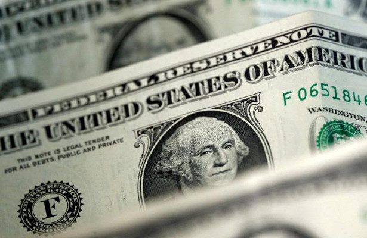

по сайту
Доллару спрогнозировали неузявимость
Делать ставку на обвал американской валюты в ближайшие пять месяцев не стоит, считают опрошенные агентством Bloomberg аналитики. Они отмечают, что доллар, скорее всего, вернется в нисходящий тренд в 2019 году, что будет вызвано снижением темпов роста экономики США, однако вплоть до конца первого квартала 2019 года ждать этого не следует. Аналитики уверены, что поддержку американской валюте окажут Федеральная резервная система (ФРС) США и пиковые пок азатели на рынке труда. Долларовый индекс Bloomberg находится на пике за последние 18 месяцев, поднявшись еще на 0,6 за торги 12 ноября, поэтому в ближайшее время доллар будет неуязвим для играющих против него трейдеров. Об этом сообщает Рамблер.

Доллар настроился снова преодолеть исторический максимум
Курс доллара растет на глобальном рынке к валютам развивающихся рынков, включая рубль. Скорее всего, укрепление американской валюты продолжится и дальше, считают опрошенные "Российской газетой" аналитики. Во вторник, 13 ноября, рубль, вероятно, останется под давлением, прогнозирует начальник аналитического управления банка "Зенит" Владимир Евстифеев. Небольшое восстановление уровня нефтяных котировок не сможет компенсировать рублю нервозное ожидание новых санкций США, полагает он. Курс российской валюты, по мнению аналитика, должен остаться сегодня в диапазоне 67-68 рублей за доллар, но риски обновления среднесрочных максимумов выглядят высокими. В последние дни волатильность в паре "рубль-доллар" выросла, констатирует руководитель направления по анализу рынков УК "Ингосстрах-инвестиции" Валентин Журба. Это произошло из-за удешевления нефти и санкционной риторики, соглашается он. Эти же факторы останутся доминирующими в ближайшие недели, причем курс доллара может достичь 69-70 рублей, говорит Журба. Последний раз, напомним, официальный курс американской валюты, который устанавливает Банк России, приблизился к 70 рублям 12 сентября 2018 года, а превысил его в марте 2016 года. Уверенный темп роста экономики США поддерживает доллар, продолжает Евстифеев. Федеральная резервная система (ФРС) США не видит препятствий для еще одного повышения базовой ставки в декабре и трех повышений в 2019 году, добавляет он.

Обвал на рынке нефти. Цены опустились до минимума с августа
Цены на нефть опустились до минимума с августа. Баррель смеси Brent подешевел до $73, WTI стоит менее $64. На рынке энергоносителей наблюдается настоящий обвал. Падение началось с самого начала октября, и еще в четверг котировки падали более чем на 2%. Сегодня на фоне всеобщей эйфории по поводу возможного торгового соглашения Китая и США цены на нефть также подрастают, но рост этот пока выглядит скромно. В последний раз цена нефти этого сорта находилась ниже уровня в $74 за баррель 22 августа текущего года. Сложно назвать какую-то конкретную причину, скорее, цены на нефть весь октябрь просто падали вместе с фондовыми рынками. Вместе с тем, фактор Ирана в последнее время отошел на второй план, об этом практически никто не говорит, и на динамику рынка не влияет. Стоит лишь отметить, что перед падением в сентябре мы стали свидетелями мощного роста, что является классическим примером поведения рынков перед обвалом. Стоит напомнить, что тогда многие эксперты с уверенностью заявляли, что цены на нефть достигнут отметки в $100 и в этом можно не сомневаться.
Первоисточник
Гривна